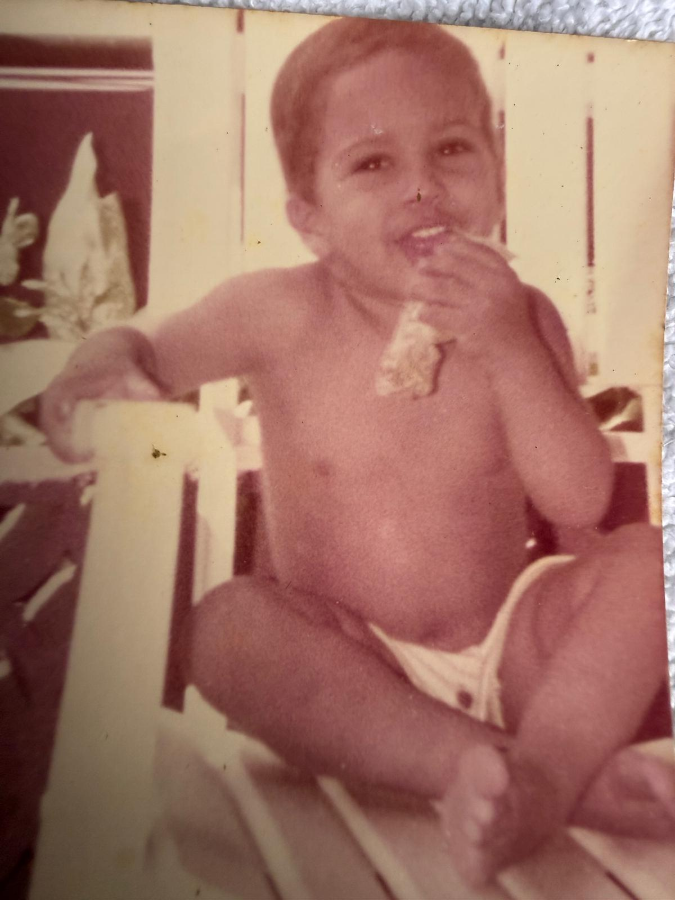
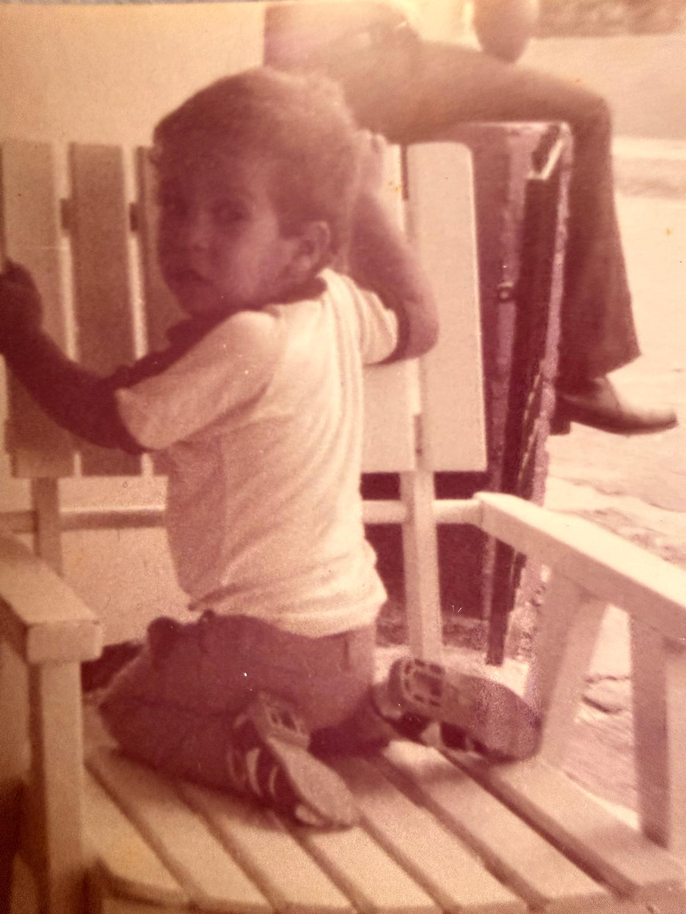
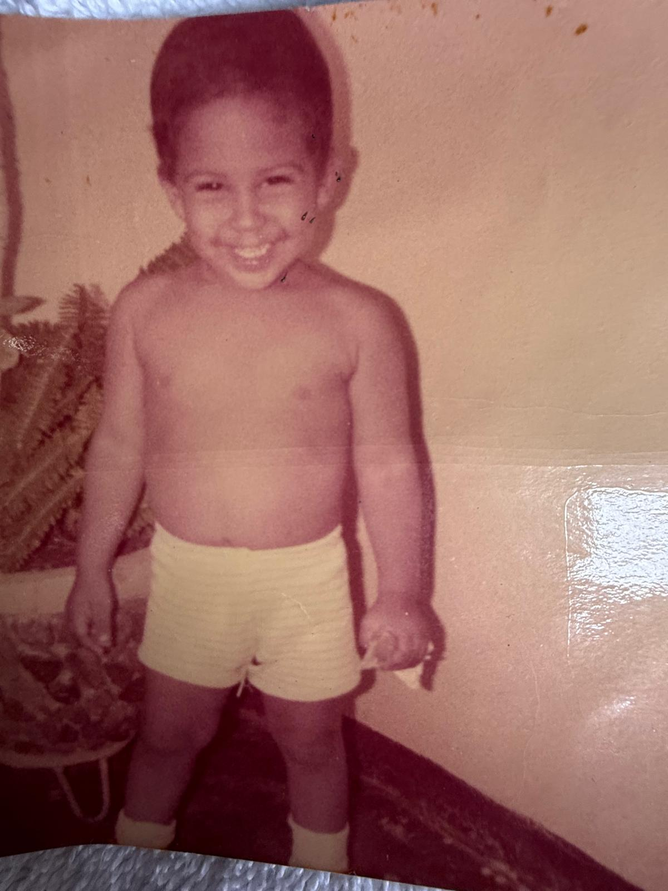
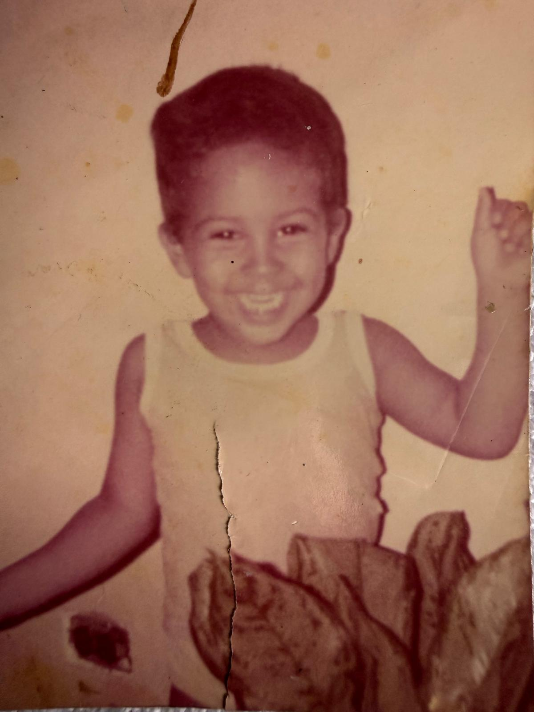

El Ciclo de los 3 Soles
⏳ Tiempo hasta el Despertar de Guahayona
Progreso de la Gesta
40pts
105pts
250pts
550pts
1000pts
Introducción de la Gesta:
"¡Hau, Cacique Francisco! Escucha la voz de Yocahú, que sopla a través del mar, desde las altas montañas de Quisqueya (tu tierra natal) hasta las costas de Borikén (la tierra que te forjó). Eres un Cacique de dos Yucayeques, unido por la misma sangre taína y las mismas estrellas." Has completado cuarenta y cinco soles sobre la tierra.
Cacique Francisco, tu destino no se labra en un solo día. Esta gesta se compone de 3 Soles Sagrados. El Jueves es tu Rebelión y Retorno, el Viernes es tu Purificación y Deleite, y el Sábado será tu Consagración Final.
Solo si acumulas los puntos de cada jornada, serás digno de los misterios del tercer día. ¡Meta Final: 1,000 Puntos!
Las Reglas de la Gesta:
- Ubicación Sagrada: El mapa es secreto. Tu Guaca te guiará por las sendas de Borikén. Solo cuando lleguen al punto exacto, se revelará la energía del lugar.
- La Señal Ancestral (Oráculo): Al llegar a cada parada, aparecerá un mensaje enigmático. Deberás leerlo para entender la esencia de ese batey y lo que los ancestros esperan de ti allí.
- El Reto de Sabiduría (Prueba): Es el desafío que debes resolver en el sitio. Observa, pregunta y descubre los secretos del lugar para ganar tus Puntos de Valor.
- El Registro del Guerrero (Documentación): Para desbloquear el siguiente paso, deberás dejar constancia de tu hazaña con una foto o video y cumplir la Ofrenda de acción. Una vez documentado, la Guaca validará tu progreso.
Agenda de la Gesta
La Bendición de Atabey:
"Como la Diosa Madre y señora de las aguas dulces, Atabey bendice hoy tu inicio. Todo gran imperio comienza con un cimiento sólido, y hoy regresas al origen para reconocer tu fuerza. Que las aguas de Borikén limpien tu camino y el sol de la mañana ilumine tu rastro."
"Baby, ¡Feliz cumpleaños! A tus 45 años, has construido una versión de ti que admiro profundamente. El amor propio no es egoísmo, es saber cuidar el templo que eres para poder entregarte a los demás. Que este nuevo año de vida sea para seguir priorizando tu paz, tus sueños y esa fuerza interna que te hace único. Celebro tu resiliencia y el gran hombre que eres hoy. Eres el Cacique de tu propio destino."
⚔ Guía EspiritualLa Leyenda del Día: Guahayona, el Guerrero-Navegante Rebelde
Hoy caminas bajo la sombra de Guahayona, el cacique que rompió el maleficio de la cueva y se atrevió a llevar a su pueblo más allá del mundo conocido, abandonando lo familiar para explorar lo desconocido. Como el Venus matutino, hoy íntegras tus opuestos: la fuerza del guerrero y la sabiduría del navegante. Eres el símbolo vivo de la resiliencia; aquel que muere y renace con más poder en cada ciclo.
📍 Parada 1: Ubicación Sagrada — Palmer
📍 Parada 2: Ubicación Sagrada — Ceiba
El Secreto de la Arena: Camina hacia la orilla y encuentra una piedra o caracol que haya sido "esculpido" por el mar. El Oráculo validará tu hallazgo si logras describir su forma única. 🏅 10 pts
📍 Parada 3: Ubicación Sagrada — Fajardo
2. El Descifrado de la Sombra: Identificar qué elementos de la tierra y el bosque (ingredientes) componen su esencia. 🏅 15 pts
El Sello de la Sabiduría: Grabar El Discurso de Guahayona y brindar. (Sigue las instrucciones del libreto sagrado). 🏅 30 pts
La Bendición de la Guaca:
"Atabey, en su infinita calma, susurra hoy a tu oído. En el silencio del Viernes Santo, la agitación del mundo se detiene para dar paso al refugio sagrado. Hoy no hay rumbos externos, solo el camino hacia el corazón. Que el aroma de las flores y la calidez de la piel sean tu nueva brújula."
"Baby, en este primer año, agradezco cada minuto compartido; aunque el tiempo ha sido poco, ha sido hermoso y de una calidad invaluable. Mi único deseo hoy es permanecer en tu vida para seguir sumándonos: experiencias que nos hagan felices y momentos que nos transformen en mejores personas. Quiero que nos acompañemos en los tiempos difíciles y atesoremos los buenos. Aspiro a que sigamos conociéndonos y creciendo juntos, paso a paso, solidificando este lazo que nos une."
🌿 Guía EspiritualLa Leyenda del Día: Anacaona y la Unión de los Espíritus
Hoy caminas bajo el aura de Anacaona, la reina poeta. Mientras Guahayona representa la acción, Anacaona es el reposo y la conexión espiritual. Hoy el Yucayeque se detiene para que tú, nuestro Cacique, encuentres en la intimidad de tu refugio la fuerza que solo el amor compartido puede otorgar.
📍 Parada 1: El Saludo a Karaya (Picnic de Café en la Arena)
📍 Parada 2: El Manjar del Bohío y la Caricia de la Guaca (Spa en Casa)
La Ceremonia del Tacto: Sesión de Masaje, Manicura y Pedicura. El reto es el Silencio Sagrado: durante el masaje, el Cacique no puede hablar, solo sentir la energía que fluye. 🏅 40 pts
📍 Parada 3: El Areyto de los Cuerpos (Las 5 Estampas de la Pasión)
- El Susurro de Atabey: Acercarse al oído de la Cacica y pronunciar tres verdades profundas que solo su corazón conozca, verdades que estremezcan el alma antes de tocar el cuerpo.
- El Fluido Sagrado: Utilizando los aceites o néctares preparados en el spa, el Cacique realizará la unción. Debe recorrer con sus manos y el fluido cada camino de la piel de la Cacica.
- El Abrazo de la Ceiba: Permanecer fundidos en un abrazo total durante 5 minutos de reloj, respirando al unísono, sintiendo cómo los dos pechos se vuelven un solo latido sin mediar palabra.
- La Ofrenda de Cacao: El deleite del gusto. El Cacique alimentará a la Cacica con el fruto sagrado, explorando los sabores y la dulzura como preámbulo a la entrega final.
- La Danza de Coaybay: La consagración definitiva. La entrega total bajo la ley del deseo puro, donde el Cacique Francisco reclama su derecho al deleite y la abundancia en los brazos de su Cacica.
La Leyenda: Agüeybaná, el Gran Cacique, es el sol del centro que irradia luz a su tribu. Hoy, tras la exploración y la purificación, regresas a la tierra de tus ancestros en Loíza. Es un día de comunidad, de fuego y de reconocer que el mayor imperio es aquel que se construye con amor en los pequeños detalles.
📍 Parada 1: El Sustento del Guerrero (Desayuno en el Bohío)
📍 Parada 2: El Batey de Vacia Talega (Ritual del Fuego y Sal)
📍 Parada 3: El Remanso de la Guaca (Piscina y Visión Nocturna)
📜 El Decreto Final del Oráculo
"Francisco, en lo simple, en lo cotidiano y en los pequeños detalles es que se demuestra el amor que sentimos. A través de estos 3 días, hemos recordado que nuestra historia no se escribe con grandes monumentos, sino con cada paso que damos. Gracias a la vida por el regalo de haberme cruzado contigo y por la oportunidad de redescubrir y crecer juntos. ¡Felices 45 Soles, mi Cacique Eterno!"
El Camino de los 45 Soles
Las Raíces en Quisqueya & Boriquén
Todo gran árbol necesita raíces fuertes. Estos años sembraron la nobleza en tu corazón. En la simpleza del campo y cobijado por el amor incondicional de tu mamá Andrea, tus abuelos, tu tía Reyna, tu tío Feliz y tu tía Rosa, aprendiste el verdadero valor de la familia, el respeto y el trabajo. Ellos forjaron los cimientos de amor y los profundos valores del gran hombre que eres hoy.






Glosario del Yucayeque
- Atabey: Diosa Madre, entidad suprema de la fertilidad y las aguas dulces. Representa tu origen.
- Guahayona: El primer héroe mítico, símbolo de transformación, viaje y resiliencia.
- Yucayeque: Poblado o comunidad. Cada parada es un nuevo yucayeque por conquistar.
- Batey: Espacio sagrado de reunión y ceremonia.
- Areyto: Canto, baile y celebración épica de la tribu.
- Cemí: Deidad o espíritu ancestral que habita en objetos y lugares.
- Guaca: Tesoro sagrado o lugar de gran poder espiritual.
- Karaya: El mar / La luna. El elemento de purificación.
- Bohío: El hogar, el refugio sagrado del Cacique.
- Anacaona: "Flor de Oro", símbolo de belleza, paz y arte.
- Agüeybaná: "El Gran Cacique", símbolo de mando y sol del centro.
Herramientas y Panel de Control
🗺️ Navegación y Evidencias
Cacique, utiliza estas herramientas para subir tus evidencias y abrir tu mapa cuando el Oráculo te revele tu próximo destino.
☁️ Nube de Evidencias (Subir fotos/videos) 📍 Abrir Google Maps👑 Acceso de la Cacica (Oráculo)
Panel maestro para ver las rutas secretas y asignar puntos.
Acceso denegado.